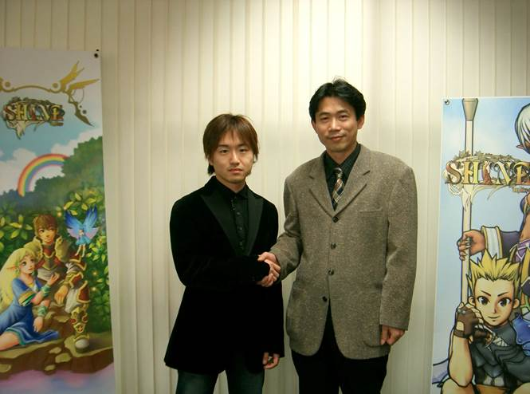
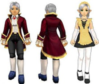
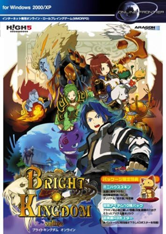
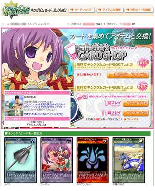
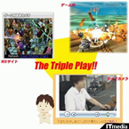
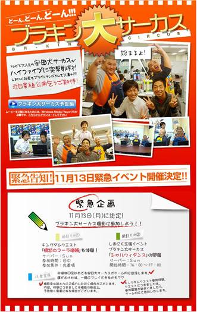

Mr. Sionic, we would like to start by learning about your background. Do you come from a technical degree such as computer engineering, or do you come from a school focused in humanities, such as art or business?
I have been working with PCs since I was 5 years old. 1980's', the popular PC in Japan was made by NEC, and what I learned using them has been the foundation of my life.
I am a graduate of Aoyama Gakuin University, Department of Education, Faculty of Letters. Now this university is famous for the sport "Ekiden" marathon.
I entered the university with the intention of becoming a teacher of Japanese literature. However, after dealing with UNIX in the university's computer system and especially learning how the World Wide Web works, I had the idea of using the Internet as an effective tool for education in Japan, which became the theme of my research.
The term "e-Larning" is used today, but before that (on a slow 14,400 bps communication line!), the Internet had already been used for distance education. They were experimenting with the use of video and audio for distance education.
When you graduated from college, were you aiming to join the gaming industry?
At the time of graduation from university, Japanese young people were collectively referred to as the "Ice Age Generation," and it was difficult for them to find a job at a general company. It is a custom unique to Japan to graduate from university in four years, with the exception of those who continue their studies at university, who uniformly aim to find a job at a company.
However, this custom collapsed during the ice age generation, and for several years, society as a whole hired fewer young people into companies.
I wanted to work in the game industry (I was especially interested in Sega and Namco), but in this situation, I thought it would be very inefficient and lose young hours of my life to go around bowing down to companies trying to get hired, so I stopped looking for a job, and apart from that, I found a startup in the knowledge management field I stopped looking for a job, and when I heard from a friend that a startup in the knowledge management field was being established, I immediately joined.
Which kind of jobs did you have before creating High Five? Perhaps you were involved with other online games before Bright Kingdom (which I will now abbreviate as Burakin)?
At a startup I joined after graduating from college, the Java language became available on Japanese cell phones (not smart phones, but feature phones with 10 keys), so I designed an application that would communicate with a server and send a voice message from a cell phone asking, "Do you know any good restaurants in this neighborhood? The application would then consult a database on the server and send the name of the restaurant, contact information, and a map.
By having databases in several different genres, users can draw on the knowledge of numerous experts from a single application interface.
The application that has become common today with Siri and GPT was conceived in 2000.
However, this was not a viable business model that could pay for the processor power, database licenses, and data center usage fees at the time.
Later, after consulting with a Korean groupware developer who was looking to expand into Japan, we began working on localizing web solutions for Korean business users for the Japanese market.
This is how we got into the business of publishing Korean MMORPGs in Japan.
Before Bright Kingdom, we
published "Seal Online", and GameMaster's history as
"Sionic" began with Seal.
We have seen many times the
same image that you use in your Twitter profile picture. Is there a story
behind this avatar? It is supposed to be a representation of you, right Mr.
Sionic?
Yes, I have been using the same profile picture for 20 years. I have used the same profile picture for 20 years. My Wife drew it. 20 years ago it was Girl friend because it was before I married her.
I created the name "Sionic" by changing my real name "Shion" as the GM name for Seal Online and used that GM character. This is also a parody of Sega's "Sonic.
Sionic" is pronounced "Shi-o-ni-kku" in Japanese, but players read it as "Shi-o-Ni-ku".
Shio" is pronounced like "Salt," and "Niku" is pronounced like "meat. Niku" is pronounced like "Meat". Since Seal had both Salt and Meat as items, players affectionately called me "Shio-niku" (salt meat).
The picture I use for my profile picture is a representation of me, or "Shio-niku," when I am controlling the GM character.
What is it that you do nowadays? Are you still part of the gaming industry, or have you moved on to a different business sector?
I run a smartphone game development and operation company called Amatz Inc. This is a small company that plans, develops and operates novel games for women. However, I have now trusted my co-owner to take care of it.
So what am I doing? My main focus right now is administration.
I have a habit of diving into unfamiliar fields when they interest me, and you may be surprised to learn that I ran for and fought in the 2020 election for the position of Tokyo Metropolitan governor of a prefecture.
Although I lost the election, I was invited to be a local goverment of Kanagawa prefecture (Kanagawa prececture) in the south of Tokyo, and I am an advisor for the digital administration.
I am also a writer, publishing a novel about a blockchain game in 2019, and I am working on a book a year while working on other projects, and starting in 2021, I am writing a series of novels set in Tokyo in the future for DIME magazine, a well-known publishing house! Why do you write at the same time?
The reason for my dual role as a writer is that successive governors of Tokyo have been either writers or TV personalities.
In other words, for a long time, the city of Tokyo and its residents have wanted "a celebrity who can convey a lot of knowledge in an easy-to-understand written form," not someone who is strong in politics or military economics.
I am also a writer because I need
to be well-prepared and ready to fight another gubernatorial election someday.
We would now like to ask about
High Five Entertainment, the company that you founded and directed. What were
your motives for its creation and expectations at the time?
In December of 2005, after I left my position as publisher of Seal Online, I was invited to join the next MMORPG project. It was the Japanese version of Shine Online.
Shine Online was being prepared to be released before High5 by the web services division of a publicly traded company (whose name I will not reveal).
However, the listed company informed the team members that the project was cancelled because it may or may not be profitable.
Since we were in the process of
signing a Japanese publishing deal for Shine Online with OnsOn (then called
Aragon), I and the other members of the team were distressed and decided to
find a new investor to form a new company. So we found a venture capitalist,
who invested a lot of money, and High5 was created.
Was Burakin the main reason
behind the creation of High Five, or did Burakin simply happen to be its first
most famous game?
Yes, I am aware of the fact that
High5 was created first and foremost for Burakin publishing. High5 was created
first and foremost to publish Burakin. But after that, the plan was to increase
the number of MMORPG publishing titles and to release titles developed
in-house.
Besides Burakin, were other
games distributed or developed by the company?
In addition, there were casual
tennis games and "AD quest (Korea's Forgotten Online)," which adopted
an advertising model that was rare at the time. We also subcontracted the
management of "Stragarden," a Japanese-made game.
How many staff members did
High Five have at the time Burakin opened to the public, and how was the staff
team structured? In other words, how many Game Masters (GM), programmers,
artists, etc.
I don't remember too many details, but I think there was probably the next person or more in Burakin.
Producer: me
Director: 1
Planner and localization: 4
Artists: 2
Game Master: 6
Server Engineer : 5
Web Designer : 2
Marketing: 3
In addition, there were full-time executives and administrative staff.
What did the High Five workplace look like? Could you share some photos of it?
I don't recall photographing the
office floor much, but I will look for it.
We know that OnsOn Soft, the company that developed Shine Online, was korean. How was communication first established with them?
Starting around 2000, a phenomenon in the Japanese game industry at that time was that a number of Korean companies wanted to enter the MMORPG field in Japan. Therefore, experienced MMORPG operators were receiving invitations to publish in Japan and materials on new games on a daily basis.
In order to strengthen our business, High5's board of directors included members with strong connections to Korean game companies, so business with OnsOn began as one of the many games that were introduced to us.
Regarding communication with Korean companies,
When I was originally managing Seal Online, grigon, Seal's developer, was also a Korean company,
Before that, my job was to localize Korean web services, so it was not difficult to get Japanese and Korean speaking staff.
I personally took Korean lessons, and as you can see in the article below, I was able to perform business greetings with beautiful pronunciation. (I can hardly speak it now, though.)
https://www.4gamer.net/games/019/G001925/20060323223908/
How did you communicate with
OnsOn despite the language differences?
I mentioned earlier that there are 4 planners and localizers, including a Korean who can speak Japanese.
Nowadays, communication across the world is instantaneous and trivial thanks to smartphones and messaging applications such as LINE, but this was not the case back then, not to mention smartphones did not exist back then (LOL). How did you maintain contact with OnsOn?
Yes, we don't have Zoom as we do today, so MSN Messenger was mainly useful, and we would talk on Polycom, a voice-only conference call system.
And I also traveled directly to Seoul, Korea for Meetings.
To my regret, I had to use strong words that I didn't want to say much that I had just learned to negotiate.
Due to the photos that still exist online, we know that you met the OnsOn staff (photo attached below). How often did you meet up with them in person?
This is a nostalgic photo. This may possibly be my first visit to OnsOn. The jacket I am wearing was borrowed from another officer. This is because I work in casual clothes, so I was not wearing a suit when I went to Korea.
The frequency of business trips was once every few months for me. I remember that I traveled on a rotating basis with other executives. It was mostly for business talks, but I always took my planner and localization staff with me to talk about development and art.
I preferred talking about game systems and art to talking about business.

Under which conditions was Burakin licensed to High Five? We would like to know details about how often the license had to be renewed and what kind of revenue model was established between High Five and OnsOn with respect to the license royalties.
Although we cannot disclose the details of individual contracts, we will talk about a typical MMORPG made in Korea at that time (2000~) that was developed for the Japanese market.
A contract fee is paid to obtain the exclusive rights to distribute the game in Japan. And since no sales are generated during the preparation period of closed beta and open beta in Japan, the development company has no choice but to work hard within the contract fee. This amount was reported on news sites and other media in Korea, and for the MMORPG genre, $1 million (100 million Japanese yen at the time) was common.
When commercialization begins in Japan, most contracts call for the developer to pay a percentage of the remaining amount, after subtracting settlement fees for credit cards, etc., from monthly sales.
In some cases, a portion of the initial payment is treated as a minimum guarantee after commercialization, and monthly remittances from Japan to Korea begin after a certain level of sales is reached.
Contracts with OnsOn were also generally common, although I will not go into detail.
Moving onto the game itself, did High Five have full creative freedom over the design of Burakin, or was it limited by strict guidelines dictated by OnsOn?
They gave High5 free reign when
it came to the art to be developed in Japan. As for costumes and items, there
are no restrictions on creating their own for Japan, and OnsOn will use them
for the Korean version if they fit the user culture, and if there are requests
to use them in other countries, OnsOn will mediate and the publishers in other
countries will use them.
Did OnsOn allow you and the
developers of High Five to use their software tools to modify the files of the
game, or was every change strictly done by OnsOn?
High5 had received template files and Korean version files from OnsOn, and based on these files, we created data for changes and sent them to OnsOn for implementation.
The reason for this is that if their software tools were used by Japanese staff to make changes to the code, there would be problems with version control.
Only OnsOn would do version
control. That was the best choice.
What was your philosophy at the time to make Burakin different from other MMO games at the time?
We always tried to incorporate things that other MMORPGs had never done before. This was because High5 was a new company and we knew that we would not be able to compete immediately against companies with strong capital.
We wanted to be nimble and take measures that larger companies could not use for reputational risk or compliance.
Not too long ago, we learned that Burakin had voiced lines for the NPCs. This surprised us, since this feature was not present in other versions of the game. Was it you who decided to implement the voiced lines?
Yes, we did. We hired a well-known Japanese company specializing in voice actors called Aoni Productions. The reason for including Japanese voices was very simple: I thought it was strange that voices were used in PlayStation and Xbox games, but not in PC MMORPGs.
And since I am an otaku, I knew that there was a boom in voice acting in the Japanese animation field, so I thought we should hire professional voice actors. My personal favorite is the voice of the village chief.
When the Fiesta expansion was released on Burakin, a new custom OST was developed for the game, but it was never released or used by other versions of Fiesta. Was this due to copyright, or simply a game design decision by OnsOn and the other publishers?
The reason we created our own background music for Bright Kingdom in Japan is as a means of localization; what surprised me about the Open beta service was that the field music, except for Lumen, was selected at random. There should be coastal music for the beach and forest music for the forest. And since game music is just as important as screen Effects, whether it is to create a sense of adventure or fear, depending on the scene, we created all new background music.
No rights issues have arisen regarding the OST (CD); it was made with legitimate permission from OnsOn. We do not know why OSTs were not created for other versions of Fiesta. Maybe the companies with distribution rights in other countries were not really interested in the sound.
Since I was familiar with the rights issues in the music industry, I divided the original CD into two discs and named them "Side-K" and "Side-J." K is for Korea and J is for Japan. K is for Shine Online and contains music created in Korea. J contains music created in Japan.
By splitting K and J into two discs, we made sure that if there was a rights issue between Japan and Korea, we could sell only one of the new discs based on the original in each country.
But we didn't need to worry about that. We were that friendly with each other.
Related to the previous question, it seems that the new music tracks were made by “NKS Project” but published by “Super Sweep”. Could you confirm if this was the case?
Yes, the name NKS Project contains the "S" of "Sawa" because it is one letter of the last name of the producer involved. I think the "N" was Mr. "Nakagawa", the "K" I can't remember right now...
Super Sweep is a trusted agent selling OSTs (CDs) for various games. They have a proven track record in Japan and we made the request.
Incidentally, were you involved in the name change from Shine Online to Fiesta, or was decided only by OnsOn?
For High5, I changed the name to "Bright Kingdom" because "Shine" in "Shine Online" reads "Shi-ne (You must die)" when pronounced in Japanese.
There were several other name candidates, but I chose this one, considering the culture of nicknames by abbreviation in Japanese (cf. Dragon Quest -> Dracula), where "Bright Kingdom" is abbreviated as "Burakin". I am glad that players love the abbreviated name "Burakin" as I had envisioned.
As for the "Fiesta" name, OnsOn made the decision, but since players loved "Burakin" in Japan, we decided to market it as "Bright Kingdom version Firsta" to make it look like one of the update seasons.
We decided to keep the main name and put "Fiesta" as an identifying sign behind it, like "Windows XP" and "Windows Vista" used at the time.
Similarly to the music, there were some costumes and hairstyles for the player characters (photo attached below) that were never released outside Burakin. Since these do not seem to be related to any external brand, was there a reason for these game assets to remain exclusive to Japan even after Burakin closed?
Costumes and hairstyles created in Japan had their data consolidated in OnsOn so that if publishers in other countries wanted to use them, they could. If they were not used in other countries, it means that those publishers did not like them very much.

Were you in contact with other Fiesta publishers such as Outspark from USA, or was your relationship with the game limited to OnsOn?
I only contacted OnsOn. I knew that it would be difficult to learn know-how from Outspark's operational methods in the U.S., for example, because different countries have different cultures and business practices.
Did you have a favorite character class, map or music track from Burakin? Would you happen to have a screenshot of what your in-game character looked like?
Fighter. I like two-handed axes and use them when playing many RPGs. However, I think that costumes look better on Archer women. This is because when designing costumes in Japan, designers often drew cute things that would look good on Archer.
My favorite map is the King Boyon (King Slime) map from Kingdom Quest. It is played with many players and the atmosphere is most enjoyable.
As for music tracks, I like all the ones created in Japan (included in Side-J), but I like the title back up music for Fiesta (Fiesta Opening Part I). The reason for using a rondo as the title is because it gives the impression of a world that includes a tragic history that repeats itself forever.
As for the screenshots, I will look for them. (I need to start by finding an old hard drive in the back of my closet and plugging it in)
Nowadays with Big Data and Data Science techniques, analysis on player data is very easy. How did you do analyze the player data and feedback back then?
Certainly, we did not have modern analytical tools, and the process of fine-tuning with reference to such data was not very sophisticated.
We were able to get statistics on player level ranges and what equipment was popular, so we did look at that.
Instead, our primary focus was on the feedback we received via email and sending GameMasters into the game to see how players were actually playing.
The idea that customer support comes first, then data analysis, is something that I still emphasize in my non-game work now.
Incidentally, how many concurrent players logged in to Burakin during a normal day? Was the number of players different during holidays and weekends?
I don't remember this at all; I think there were about 3,000 people at most times of the day. The events were held mostly on holidays and weekends, but I think there were many weekday evenings as well.
In USA, Fiesta had multiple servers to prevent a massive influx of players from saturating a single world. If my memory serves right, there were 5 available servers to choose from during the login screen. Did High Five also have multiple servers for Burakin?
I don't remember much about this either, I think it was 4 sets, 1-1, 1-2, 2-1, 2-2. Four sets, but we were running about 100 server hardware units in a data center.
I remember in 2008 or 2009, High5 had to reduce the number of servers in the data center due to financial difficulties, and we exhausted our engineers with database consolidation work.
Not only did I have to operate the database, but I actually went to the data center and "moved" the blade servers by loading them onto a dolly with several people and hauling them out. It's amazing to think that now we can manage instances inexpensively in the cloud all without such a ridiculous number of units, and the technological innovations of the past 15 years are amazing.
What kind of game modifications did you make to Burakin in order to accommodate it for japanese players? I’m asking from the perspective of game balance, such as monster and quest experience, game difficulty, player movement, etc.
This is an area where we disagreed with OnsOn and made many adjustments.
MMORPGs are generally more efficient with party play, but Burakin in Japan had many solo players.
There was a big reason for this in the game design. I wish there had been many advantages from party play, but I remember there were few advantages and it was not very good.
The game balance was unexhilarating: "Soloing is difficult and party play is not tasty." I also had a hard time wrapping my head around PvP, which was introduced midway through the game; PvP is something you have to design a versus game from the start, and implementing PvP as an update when you have a group of users who value Chat communication and solo play is not something they will appreciate. In the end, PvP did not take root in Japanese Burakin and was only enjoyed when GameMaster ran exhibition events to make players feel like a sport.
I remember many clashes between the OnsOn planners, who wanted the game to be played according to the game design, and the High5 planners, who wanted the design to be optimized based on how the players actually played.
One of the most common requests was to make Kingdom Quest more appealing, since it could be played casually, even as a Raid battle.
How did you balance the Free-to-play (F2P) aspect of the game? For reference, the publisher of Fiesta in USA was relentless about the Pay-to-win (P2W) aspect, giving those players a huge advantage. In fact, weapon and armor enchanting was essentially locked behind a paywall, because even for low levels, enchanting required the use of Cash Shop items, thus leaving F2P players behind.
When Bright Kingdom went commercial, there was a conflict among members.
Regarding the weapon items for sale, there was a split between members who wanted to set the price high because selling strong items with a limited number of days of use would upset the game balance, and members who wanted to set the price low so that the items could be worn out over and over again.
There were still many games that charged a monthly fee, and this was a time when the term "game balance" was used to "keep the game as level as possible and keep the updates from depleting.
We ended up with a lower price, which was fine until we got to version Fiesta.
However, with version Fiesta, the "it's too hard to solo and party play is not good" situation I mentioned earlier became stronger, and items for sale for enchanting became less and less useful, and only playing for a long time became effective.
I think the situation has become uninteresting for both F2P users and paid-purchase users.
What kind of Cash Shop items were most sought after by japanese players? In the case of the USA, since every premium item gave a noticeable advantage, you could say that everything was sought after (LOL).
Costumes were popular in Japan, so it was important for artists to come up with new designs each month.
We wondered how much of a
numerical advantage we should give to costumes, but we did not want to make it
too exciting. What happens when you give a large advantage is that previous
buyers get angry at the cost of repurchasing, and new buyers are discouraged
from communicating.
Moving onto the social aspects
of Burakin, what was your philosophy for marketing the game? Given that it was
free to download, was this a detriment to the marketing techniques that you
used?
This was not a problem in the PC and MMORPG sectors in Japan at the time, as free downloads were common.
The real problem, however, was the lack of a complete set of tools to capture marketing data, as is the case with modern smartphone apps.
For example, I would first attempt to eliminate the "abandonment rate" of any service, but without knowing how many lvls a player has played after installing and whether they continue to log in after that, it is impossible to improve.
Also, at that time, the only effective means of advertising was "banner ads" on information websites, and there was no wide variety of advertising methods as there is today. I had direct input and tuned into the art and design of the banner ads.
Multiple printed media was made for Burakin, such as the manga by FANG COMICS and the THE NETGAMES magazine. Was this made to promote the game to new prospective players, or to keep the existing playerbase interested in Burakin?
The FANG manga is rather aimed at attracting new players. Therefore, the manga uses only the stage setting, and the story is unrelated to the main scenario of Bright Kingdom, and is only "such an adventurer might have existed".
The manga magazine "Monthly Shonen Fang" was a challenge for Lido, a company whose publisher in the first place publishes many hard-core adult-oriented manga stories, to enter the market of manga magazines for boys. The manga magazine was to publish manga in a variety of genres, and manga on themes that boys would like, such as baseballs and monsters, were picked up, and one of those themes was the demand for a "game comic book".
This is where the idea of Bright Kingdom, which needed to develop new customers, fit in.
THE NETGAMES was a series of magazines, one for each MMORPG title, which was rare in Japan at the time. This was created to both attract new customers as well as to entertain existing players. However, the artwork of the items that Burakin offered as special offers was not very appealing. This was due to the short production period of the magazine, which did not allow time to implement attractive items in Bright Kingdom.
There was a premium edition of Burakin released as a CD (photo attached below). However, we have little information about it, and we are not even sure who published the CD. Could you tell us more about it?
This is a CD-ROM package released by a company called e-Frontier. The "ONLINE FRONTIER" logo in the upper right corner indicates that this is the online gaming division of a company called e-Frontier. The ARAGON below it is OnsOn's old company name.
In Japan at that time, there were many users with slow connection speeds, so it made sense to create and sell an installation CD in this way.
However, since the installer was originally a free download, it was designed so that purchasers would not feel that they had lost money on the sales price.
The idea was to make the set worth the price by adding items that can be used in the game and fan goods such as poster paper, as indicated in the lower right corner of the package.
|  |
We recently discovered that two products made by PLANEX came with a free CD that contained an installable version of Burakin. One is the BLW-HPMM-G router, which we have failed to track down, and one the other is the GW-US54Mini-G. This is a very unique and clever way to introduce new players to the game. How was this deal made between High Five and PLANEX?
I was reminded of this question when I received it.
PLANEX is a well-known company that manufactures and sells network hardware. In order to increase the number of users of its hardware at that time, PLANEX invested in online game companies and marketed its products so that they would choose PLANEX products when playing online games.
PLANEX invested in High5 as well, although not in such a large amount, and provided us with a networking product for use in our office. The performance was good and there was no inconvenience.
As part of such efforts, we decided to include an installation CD with the view that users who purchase PLANEX products will always have a good quality network connection and will be able to play online games.
In general, did the sales of the physical merchandise of Burakin contribute to the profit of the game?
Yes, we did. We did not think that magazines, packages, OSTs, etc. would directly benefit the game on their own. We always tried to promote the play of Burakin so that the game would ultimately be profitable.
We also asked magazine companies, package companies, and CD sales companies to help with the production costs, so that High5 would not have to bear any of the costs.
The design of the Burakin website is amazing, however there are only low resolution screenshots of it left. Was it a single person who did both the graphic design and the programming for it, or was it multiple people? In either case, who was the person or people who developed the website?
All websites are created by High5 members. My policy is that "web design is engineering," so the web designers belonged to the same team as the engineers.
On the other hand, the artists who draw the characters belonged to the same team as the planners.
The source code of the site was lost along with the servers after the company changed to NETBANCO, so it is difficult to reproduce. (I'll try to find an old hard drive to see if there are any screenshots from back then, same answer as before...)
Not counting concept art, for the design of the Burakin posters and advertisements, did you hire a single artist or were there multiple artists in charge of this?
In the early stages of the Japanese rollout, we had no choice but to use art from Shine Online because of the short production period. Later, we had several artists participate and obtained a variety of ad designs, but there was no sense of unity, so in the latter stages, two in-house artists began to create the ads.
There are images of a card system similar to Yu-Gi-Oh! made for the game, but we have no idea about the context behind these (photo attached below). Was it just a fan art by some player, or was this a real feature designed by High Five?
This is a simple collection of cards that can be enjoyed only on the Web site and was created in High5.
Generally, game players want to play the game, not read the website.
However, we, as the operator, had a shopping mall on the website that sold items, so we had to provide users with a fun experience on the website and direct them to the website.
So we came up with several strategies and decided to implement a simple collection feature that would allow users to collect as many card drawings as possible.
Each card picture is accompanied by a text explaining the Burakin world setting to help players understand the Burakin world.
I would not have remembered this question without it. Thanks...
|  |
There are many public events which you were part of, but three of them have caught our attention. The first is the so called “The Triple Play”, which seems to have been hosted around the launch of Burakin. Do you remember this?
Today, YouTubers are doing the same thing all over the world, but I think I am the only person in Japan who was distributing games on Windows Media Server in 2006.
I started the "In-game fixed-point camera" to show people who have not yet played the game that the fun of MMORPGs lies in the point where many people gather. For those who are already playing, if they see a lot of players on the screen, they will want to log in themselves.
The "live-streaming" was done to show that Burakin is emotionally stimulating and fun by showing people how I myself enjoy playing it.
Today, everyone is doing this, but at the time, it was something I came up with to fulfill one point: "I want to convey the fun.

The second was a collaboration with “安田大サーカス”. Can you tell us more about it? We are especially interested in this one because you wore the “裸ネクタイ”costume. We don’t know if this costume was meant to be exclusive to Burakin, but it was actually ported and distributed in other versions of Fiesta.
This is a web video introduction movie of Bright Kingdom, featuring the famous Japanese comedian "Yasuda the Great Circus".
Yasuda's circus performs a trick in which the central figure (Yasuda's leader) has his clothes torn off and is dressed in a "naked tie" to elicit laughter.
In this movie, when Commander Yasuda visits High5, I greet him dressed in a naked tie, a surreal gag.
We then introduce the game while playing Burakin together.
No license is required for the "naked tie" look, so I would be happy if this costume was implemented in Fiesta in other countries and
|  |
The third event we want to know about is コミケットnumbers 70 and 72. It seems that you hosted a booth here and distributed the Bright Kingdom fan book (photo attached below), which we have tried to obtain but haven’t found a copy so far. Could you tell us about your experience at the コミケットand the interactions you had with the Burakin players?
Comiket is Japan's largest festival for people who enjoy manga, anime, and games. We decided to participate in Comiket with the idea that we could use this opportunity to raise the profile of Burakin.
I had been participating in Comiket since my days at Seal, so I was familiar with it, and High5's in-house artists also had a deep understanding of Comiket as individual illustrators, which made it possible. I also drew a simple cartoon in the fan book.
Are you aware of any radio or TV programs that featured your company High Five or Burakin?
The radio program is linked to the manga miscellany "Monthly Shonen Fang" mentioned earlier. It is on the Japanese radio station Bunka Hoso, which is a station that broadcasts a number of programs that are strong in animation, video games and voice-over culture.
The program was called "Weekly Shonen Fang", the manga magazine was Monthly and the radio program was Weekly. The radio program was renewed after several broadcasts, and I was invited to be a part of it.
Famous voice actors Katsuyuki Konishi and Wataru Hatano hosted the show, and my role was to provide commentary on the Internet and PC culture according to the topic.
Since the program was in conjunction with a manga magazine, the radio program ended at the same time the manga magazine ended publication.
(The publisher's attempts to reach boys did not work out.)
I don't remember the TV program.
When the contract was completed for Burakin at High5, we had a party to celebrate the company's founding. This was an attempt to advertise Burakin by inviting the press, and it was aired for a few minutes on a local TV station in Tokyo as part of the business news. It was very cost-effective.
Do you still keep in touch with staff from High Five and OnsOn?
We don't actively keep in touch, but now that we have social networking sites, we can kind of know what's going on. I am moving on with my new life at my new employer.
In retrospect, how do you see Burakin and its impact on early online gaming in Japan?
I think we have been innovative in our operational and marketing methods. There were many other gaming companies that saw what Burakin was marketing and imitated them.
As for the game itself, I think Bright Kingdom is a very approachable game when considered as an MMORPG, and is ideal for the desire to play while communicating primarily.
However, it is only a Japanese localization of Shine Online, and we decided that it would be difficult to differentiate the game as a game only within the scope of localization.
OnsOn's work is very commendable,
but a developer creates a game that is the ideal of the developer and not the
ideal of the publisher. This is the same problem with any localized game.
With all the experience that
you have accumulated now, would you have done something different with the
marketing and game balancing of Burakin?
The information we get from customer support is important but limited, so I would implement marketing tools to get evidence and improve the in-game content that players want.
In terms of marketing, the in-game advertising system that we worked on with Burakin in Japan is now common in smartphone apps today, so I think we will promote it to improve the F2P user experience. I think we would change the game balance to make solo play more fun and party play more enjoyable.
As the former founder and director of a gaming company, what advice would you give to new people in the gaming industry to help them develop successful MMO games?
...I have written many things,
but the most important thing to consider is whether or not the player is having
fun. Both the game system and marketing theory should be "slaves to fun.”
As we approach the end of this interview, we would like to ask one more question. The song titled “Mi-Wa-Ku★キングダム (キャンペーンソング)” is deeply interesting to us. In fact, there’s a still a video of it surviving online, https://www.youtube.com/watch?v=tlYcc9WB0tM. If possible, we would like to hear the story behind the creation and recording of this song. Also, do you have a higher quality version of this video?
This music video was shot during the time of producing the OST.
First of all, Mi-Wa-Ku★Kingdom was a secret track created by N and K out of NKS Project.
I was not informed and was suddenly asked to put lyrics on the track because I had written a fun song.
I can also write lyrics, so I wrote it up right away, but I didn't expect to sing it myself.
In the end, during the studio recording of the OST, they used the extra time to record me singing the song.
Then, a friend of mine who works as a broadcaster heard it and liked the song so much that he decided to make a music video using him and his staff, and we bought HipHop costumes of the time in "Harajuku," a town for young people.
A high quality version of this video file does not exist. Because in 2006-7, the Japanese Internet was calling even VGA (640x480) size "high quality", and we did not resourcefully edit the video with a Pixel Size larger than that!